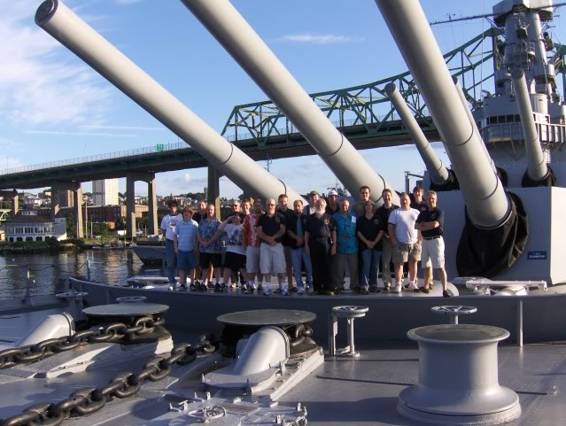

International R/C Warship Combat Club, Inc.
Keeping Ponds Safe since 1978
IRCWCC Nationals
2009

This years Nationals was held at the Pocasset Pond at War Memorial Park in Johnston, Rhode Island. They are listed several ways on the web. www.johnstonrec.com for general information and there were directions to the park for those that have not been there before. We battled from the shore line by the Pavilion. In the past we used the island but it was very difficult to launch boats from there. The shore line had a nice launching area but the lake had a lot of weed growth which made ship speed testing impossible. We used the Pavilion which is 25 ft across and outside personal tents.
Battling was close in and plaged by the grass on the first couple of days but it eased off as the lake was cleaned each day around the battle area. On Tuesday, the rains came and so we moved fleet battle to Wedsday and had one on ones on Tuesday. The Allied forces again managed to lose every battle even though they had a preponderance of power in battle units. Final score was Axis 97015, Allies 63685. We had a total of 25 sinks.
Lunches were from Luigi's and were catered to the lake. The bathroom was about 150 ft from the pavilion. Friday night diner on the USS Massachusetts in Fall River,MA was one of the highlites of this Nats.
Captains onboard the USS Massachusetts